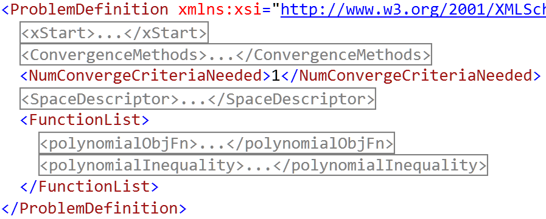

This project is maintained by DesignEngrLab
This example describes the use of the Problem Definition class that save problem formulation details to a file. Something about the pure imperative nature of how problems and methods are created did not seem intuitive, as a result, the declarative nature of an XML file was accommodated. The example can be divided into two parts. In the first part, a problem is created in a normal imperative (line-by-line of code) manner and the results are saved to an xml file called “test1.xml”. After running the example, take a minute to look at what included. Here is a condensed snapshot of the members:

As described on the Problem Formulation page, there are four aspects to a setting up a problem: 1) number of variables, 2) space constraints, 3) objective(s), and 4) constraints. This file only includes these and not the details on the optimization method. Except for the convergence criteria. It was decided that the convergence criteria may be one aspect to include since such files may be used to compare one optimization methods to another, and the mode of convergence may be set to the same for optimization methods.
In the first function, makeAndSaveProblemDefinition(), the xml file is created. Note, in this function that a ProblemDefinition object is created and receives objects in the same way as the abstractOptMethod.
var pd = new ProblemDefinition();
var dsd = new DesignSpaceDescription(2);
for (var i = 0; i < 2; i++)
dsd[i] = new VariableDescriptor(-10000, 10000, 0.01);
pd.Add(dsd);
/* Add three convergence criteria */
pd.Add(new DeltaXConvergence(0.0001));
pd.Add(new MaxAgeConvergence(100, 0.000000001));
pd.Add(new MaxFnEvalsConvergence(50000));
pd.Add(new MaxSpanInPopulationConvergence(1));
.
.
.
pd.Add(new double[] { 1500.0, 700.0 });
This last line adds the initial point, xStart to the problem definition. At the bottom of the file, the “saveProbToXml”
pd.saveProbToXml(filename);
Back in the main function, the file is now opened and the resulting problem definition is added all at once to an optimization method.
ProblemDefinition probTest1 = ProblemDefinition.openprobFromXml(filename);
abstractOptMethod opty;
opty.Add(probTest1);
In the remainder of the file, seven optimization methods are invoked on this problem. This is a small convex, uni-modal, smooth problem with an unconstrained minimum at {1, 5} and a constrained minimum at {3, 3}. In the commands used to create the optimization methods, note how aspects of the problem are added, reused and removed. For example, the only difference in the first and second approach is a change in the search direction method.
searchDirMethod = new FletcherReevesDirection();
opty.Add(searchDirMethod);
opty.ResetFunctionEvaluationDatabase();
fStar = opty.Run(out xStar);
The ResetFuncationEvaluationsDatabase is a rarely used function that is only added in this one spot since the optimization method is the same as the previous. If this line is commented, the only affect is the number of function evaluations is not reset to 0, and the Fletcher-Reeves approach may benefit from states found in the Steepest Descent one. The next method, Generalized-Reduced Gradient, is the ONLY one here that handles constraints explicitly. It find the optimal very quickly and accurately. However, many of the others show a better value of f*, this is because they are using an imperfect penalty function (new squaredExteriorPenalty(opty, 10)). While it seems that GRG includes it as well, it is only used in the the line search method. The remaining discrete methods are somewhat on par with these first three, but require the discretization provides in the problem definition.
The final exhaustive search will not likely finish and you will see why when you run it. However, if you change the delta from 0.01 to 1.0, you may get it to complete in a weekend.